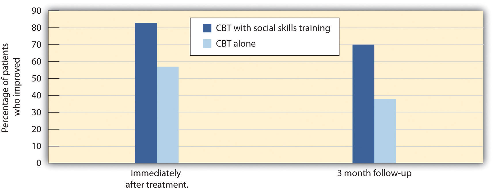
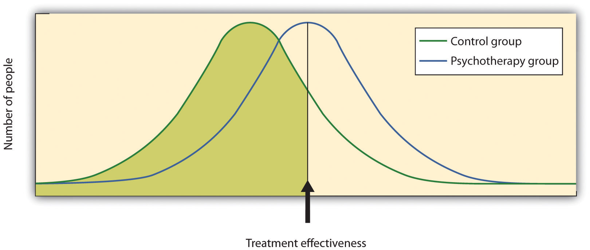

We have seen that psychologists and other practitioners employ a variety of treatments in their attempts to reduce the negative outcomes of psychological disorders. But we have not yet considered the important question of whether these treatments are effective, and if they are, which approaches are most effective for which people and for which disorders. Accurate empirical answers to these questions are important as they help practitioners focus their efforts on the techniques that have been proven to be most promising, and will guide societies as they make decisions about how to spend public money to improve the quality of life of their citizens (Hunsley & Di Giulio, 2002).Hunsley, J., & Di Giulio, G. (2002). Dodo bird, phoenix, or urban legend? The question of psychotherapy equivalence. The Scientific Review of Mental Health Practice: Objective Investigations of Controversial and Unorthodox Claims in Clinical Psychology, Psychiatry, and Social Work, 1(1), 11–22.
Psychologists use outcome researchStudies that assess the effectiveness of medical treatments., that is, studies that assess the effectiveness of medical treatments, to determine the effectiveness of different therapies. As you can see in Figure 13.10 "Outcome Research", in these studies the independent variable is the type of the treatment—for instance, whether it was psychological or biological in orientation or how long it lasted. In most cases characteristics of the client (e.g., his or her gender, age, disease severity, and prior psychological histories) are also collected as control variables. The dependent measure is an assessment of the benefit received by the client. In some cases we might simply ask the client if she feels better, and in other cases we may directly measure behavior: Can the client now get in the airplane and take a flight? Has the client remained out of juvenile detention?
Figure 13.10 Outcome Research

The design of an outcome study includes a dependent measure of benefit received by the client, as predicted by independent variables including type of treatment and characteristics of the individual.
In every case the scientists evaluating the therapy must keep in mind the potential that other effects rather than the treatment itself might be important, that some treatments that seem effective might not be, and that some treatments might actually be harmful, at least in the sense that money and time are spent on programs or drugs that do not work.
One threat to the validity of outcome research studies is natural improvement—the possibility that people might get better over time, even without treatment. People who begin therapy or join a self-help group do so because they are feeling bad or engaging in unhealthy behaviors. After being in a program over a period of time, people frequently feel that they are getting better. But it is possible that they would have improved even if they had not attended the program, and that the program is not actually making a difference. To demonstrate that the treatment is effective, the people who participate in it must be compared with another group of people who do not get treatment.
Another possibility is that therapy works, but that it doesn’t really matter which type of therapy it is. Nonspecific treatment effects occur when the patient gets better over time simply by coming to therapy, even though it doesn’t matter what actually happens at the therapy sessions. The idea is that therapy works, in the sense that it is better than doing nothing, but that all therapies are pretty much equal in what they are able to accomplish. Finally, placebo effects are improvements that occur as a result of the expectation that one will get better rather than from the actual effects of a treatment.
Thousands of studies have been conducted to test the effectiveness of psychotherapy, and by and large they find evidence that it works. Some outcome studies compare a group that gets treatment with another (control) group that gets no treatment. For instance, Ruwaard, Broeksteeg, Schrieken, Emmelkamp, and Lange (2010)Ruwaard, J., Broeksteeg, J., Schrieken, B., Emmelkamp, P., & Lange, A. (2010). Web-based therapist-assisted cognitive behavioral treatment of panic symptoms: A randomized controlled trial with a three-year follow-up. Journal of Anxiety Disorders, 24(4), 387–396. found that patients who interacted with a therapist over a website showed more reduction in symptoms of panic disorder than did a similar group of patients who were on a waiting list but did not get therapy. Although studies such as this one control for the possibility of natural improvement (the treatment group improved more than the control group, which would not have happened if both groups had only been improving naturally over time), they do not control for either nonspecific treatment effects or for placebo effects. The people in the treatment group might have improved simply by being in the therapy (nonspecific effects), or they may have improved because they expected the treatment to help them (placebo effects).
An alternative is to compare a group that gets “real” therapy with a group that gets only a placebo. For instance, Keller et al. (2001)Keller, M. B., Ryan, N. D., Strober, M., Klein, R. G., Kutcher, S. P., Birmaher, B.,…McCafferty, J. P. (2001). Efficacy of paroxetine in the treatment of adolescent major depression: A randomized, controlled trial. Journal of the American Academy of Child & Adolescent Psychiatry, 40(7), 762–772. had adolescents who were experiencing anxiety disorders take pills that they thought would reduce anxiety for 8 weeks. However, one-half of the patients were randomly assigned to actually receive the antianxiety drug Paxil, while the other half received a placebo drug that did not have any medical properties. The researchers ruled out the possibility that only placebo effects were occurring because they found that both groups improved over the 8 weeks, but the group that received Paxil improved significantly more than the placebo group did.
Studies that use a control group that gets no treatment or a group that gets only a placebo are informative, but they also raise ethical questions. If the researchers believe that their treatment is going to work, why would they deprive some of their participants, who are in need of help, of the possibility for improvement by putting them in a control group?
Another type of outcome study compares different approaches with each other. For instance, Herbert et al. (2005)Herbert, J. D., Gaudiano, B. A., Rheingold, A. A., Myers, V. H., Dalrymple, K., & Nolan, E. M. (2005). Social skills training augments the effectiveness of cognitive behavioral group therapy for social anxiety disorder. Behavior Therapy, 36(2), 125–138. tested whether social skills training could boost the results received for the treatment of social anxiety disorder with cognitive-behavioral therapy (CBT) alone. As you can see in Figure 13.11, they found that people in both groups improved, but CBT coupled with social skills training showed significantly greater gains than CBT alone.
Figure 13.11
Herbert et al. (2005) compared the effectiveness of CBT alone with CBT along with social skills training. Both groups improved, but the group that received both therapies had significantly greater gains than the group that received CBT alone.
Source: Adapted from Herbert, J. D., Gaudiano, B. A., Rheingold, A. A., Myers, V. H., Dalrymple, K., & Nolan, E. M. (2005). Social skills training augments the effectiveness of cognitive behavioral group therapy for social anxiety disorder. Behavior Therapy, 36(2), 125–138.
Other studies (Crits-Christoph, 1992; Crits-Christoph et al., 2004)Crits-Christoph, P. (1992). The efficacy of brief dynamic psychotherapy: A meta-analysis. American Journal of Psychiatry, 149, 151–158; Crits-Christoph, P., Gibbons, M. B., Losardo, D., Narducci, J., Schamberger, M., & Gallop, R. (2004). Who benefits from brief psychodynamic therapy for generalized anxiety disorder? Canadian Journal of Psychoanalysis, 12, 301–324. have compared brief sessions of psychoanalysis with longer-term psychoanalysis in the treatment of anxiety disorder, humanistic therapy with psychodynamic therapy in treating depression, and cognitive therapy with drug therapy in treating anxiety (Dalgleish, 2004; Hollon, Thase, & Markowitz, 2002).Dalgleish, T. (2004). Cognitive approaches to posttraumatic stress disorder: The evolution of multirepresentational theorizing. Psychological Bulletin, 130, 228–260; Hollon, S. D., Thase, M. E., & Markowitz, J. C. (2002). Treatment and prevention of depression. Psychological Science in the Public Interest, 3, 39–77. These studies are advantageous because they compare the specific effects of one type of treatment with another, while allowing all patients to get treatment.
Because there are thousands of studies testing the effectiveness of psychotherapy, and the independent and dependent variables in the studies vary widely, the results are often combined using a meta-analysis. A meta-analysisA statistical technique that uses the results of existing studies to integrate and draw conclusions about those studies. is a statistical technique that uses the results of existing studies to integrate and draw conclusions about those studies. In one important meta-analysis analyzing the effect of psychotherapy, Smith, Glass, and Miller (1980)Smith, M. L., Glass, G. V., & Miller, R. L. (1980). The benefits of psychotherapy. Baltimore, MD: Johns Hopkins University Press. summarized studies that compared different types of therapy or that compared the effectiveness of therapy against a control group. To find the studies, the researchers systematically searched computer databases and the reference sections of previous research reports to locate every study that met the inclusion criteria. Over 475 studies were located, and these studies used over 10,000 research participants.
The results of each of these studies were systematically coded, and a measure of the effectiveness of treatment known as the effect size was created for each study. Smith and her colleagues found that the average effect size for the influence of therapy was 0.85, indicating that psychotherapy had a relatively large positive effect on recovery. What this means is that, overall, receiving psychotherapy for behavioral problems is substantially better for the individual than not receiving therapy (Figure 13.12 "Normal Curves of Those Who Do and Do Not Get Treatment"). Although they did not measure it, psychotherapy presumably has large societal benefits as well—the cost of the therapy is likely more than made up for by the increased productivity of those who receive it.
Figure 13.12 Normal Curves of Those Who Do and Do Not Get Treatment
Meta-analyses of the outcomes of psychotherapy have found that, on average, the distribution for people who get treatment is higher than for those who do not get treatment.
Other meta-analyses have also found substantial support for the effectiveness of specific therapies, including cognitive therapy, CBT (Butler, Chapman, Forman, & Beck, 2006; Deacon & Abramowitz, 2004),Butler A. C., Chapman, J. E., Forman, E. M., Beck, A. T. (2006). The empirical status of cognitive-behavioral therapy: A review of meta-analyses. Clinical Psychology Review, 26(1), 17–31. doi:10.1016/j.cpr.2005.07.003; Deacon, B. J., & Abramowitz, J. S. (2004). Cognitive and behavioral treatments for anxiety disorders: A review of meta-analytic findings. Journal of Clinical Psychology, 60(4), 429–441. couples and family therapy (Shadish & Baldwin, 2002),Shadish, W. R., & Baldwin, S. A. (2002). Meta-analysis of MFT interventions. In D. H. Sprenkle (Ed.), Effectiveness research in marriage and family therapy (pp. 339–370). Alexandria, VA: American Association for Marriage and Family Therapy. and psychoanalysis (Shedler, 2010).Shedler, J. (2010). The efficacy of psychodynamic psychotherapy. American Psychologist, 65(2), 98–109. On the basis of these and other meta-analyses, a list of empirically supported therapies—that is, therapies that are known to be effective—has been developed (Chambless & Hollon, 1998; Hollon, Stewart, & Strunk (2006).Chambless, D. L., & Hollon, S. D. (1998). Defining empirically supported therapies. Journal of Consulting and Clinical Psychology, 66(1), 7–18; Hollon, S., Stewart, M., & Strunk, D. (2006). Enduring effects for cognitive therapy in the treatment of depression and anxiety. Annual Review of Psychology, 57, 285–316. These therapies include cognitive therapy and behavioral therapy for depression; cognitive therapy, exposure therapy, and stress inoculation training for anxiety; CBT for bulimia; and behavior modification for bed-wetting.
Smith, Glass, and Miller (1980)Smith, M. L., Glass, G. V., & Miller, R. L. (1980). The benefits of psychotherapy. Baltimore, MD: Johns Hopkins University Press. did not find much evidence that any one type of therapy was more effective than any other type, and more recent meta-analyses have not tended to find many differences either (Cuijpers, van Straten, Andersson, & van Oppen, 2008).Cuijpers, P., van Straten, A., Andersson, G., & van Oppen, P. (2008). Psychotherapy for depression in adults: A meta-analysis of comparative outcome studies. Journal of Consulting and Clinical Psychology, 76(6), 909–922. What this means is that a good part of the effect of therapy is nonspecific, in the sense that simply coming to any type of therapy is helpful in comparison to not coming. This is true partly because there are fewer distinctions among the ways that different therapies are practiced than the theoretical differences among them would suggest. What a good therapist practicing psychodynamic approaches does in therapy is often not much different from what a humanist or a cognitive-behavioral therapist does, and so no one approach is really likely to be better than the other.
What all good therapies have in common is that they give people hope; help them think more carefully about themselves and about their relationships with others; and provide a positive, empathic, and trusting relationship with the therapist—the therapeutic alliance (Ahn & Wampold, 2001).Ahn, H.-N., & Wampold, B. E. (2001). Where oh where are the specific ingredients? A meta-analysis of component studies in counseling and psychotherapy. Journal of Counseling Psychology, 48(3), 251–257. This is why many self-help groups are also likely to be effective and perhaps why having a psychiatric service dog may also make us feel better.
Although there are fewer of them because fewer studies have been conducted, meta-analyses also support the effectiveness of drug therapies for psychological disorder. For instance, the use of psychostimulants to reduce the symptoms of attention-deficit/hyperactivity disorder (ADHD) is well known to be successful, and many studies find that the positive and negative symptoms of schizophrenia are substantially reduced by the use of antipsychotic medications (Lieberman et al., 2005).Lieberman, J., Stroup, T., McEvoy, J., Swartz, M., Rosenheck, R., Perkins, D.,…Lebowitz, B. D. (2005). Effectiveness of antipsychotic drugs in patients with chronic schizophrenia. New England Journal of Medicine, 353(12), 1209.
People who take antidepressants for mood disorders or antianxiety medications for anxiety disorders almost always report feeling better, although drugs are less helpful for phobic disorder and obsessive-compulsive disorder. Some of these improvements are almost certainly the result of placebo effects (Cardeña & Kirsch, 2000),Cardeña, E., & Kirsch, I. (2000). True or false: The placebo effect as seen in drug studies is definitive proof that the mind can bring about clinically relevant changes in the body: What is so special about the placebo effect? Advances in Mind-Body Medicine, 16(1), 16–18. but the medications do work, at least in the short term. An analysis of U.S. Food and Drug Administration databases found effect sizes of 0.26 for Prozac, 0.26 for Zoloft, 0.24 for Celexa, 0.31 for Lexapro, and 0.30 for Cymbalta. The overall average effect size for antidepressant medications approved by the FDA between 1987 and 2004 was 0.31 (Deshauer et al., 2008; Turner, Matthews, Linardatos, Tell, & Rosenthal, 2008).Deshauer, D., Moher, D., Fergusson, D., Moher, E., Sampson, M., & Grimshaw, J. (2008). Selective serotonin reuptake inhibitors for unipolar depression: A systematic review of classic long-term randomized controlled trials. Canadian Medical Association Journal, 178(10), 1293–301. doi:10.1503/cmaj.071068; Turner, E. H., Matthews, A. M., Linardatos, E., Tell, R. A., & Rosenthal, R. (2008). Selective publication of antidepressant trials and its influence on apparent efficacy. New England Journal of Medicine, 358(3), 252–60.
One problem with drug therapies is that although they provide temporary relief, they don’t treat the underlying cause of the disorder. Once the patient stops taking the drug, the symptoms often return in full force. In addition many drugs have negative side effects, and some also have the potential for addiction and abuse. Different people have different reactions, and all drugs carry warning labels. As a result, although these drugs are frequently prescribed, doctors attempt to prescribe the lowest doses possible for the shortest possible periods of time.
Older patients face special difficulties when they take medications for mental illness. Older people are more sensitive to drugs, and drug interactions are more likely because older patients tend to take a variety of different drugs every day. They are more likely to forget to take their pills, to take too many or too few, or to mix them up due to poor eyesight or faulty memory.
Like all types of drugs, medications used in the treatment of mental illnesses can carry risks to an unborn infant. Tranquilizers should not be taken by women who are pregnant or expecting to become pregnant, because they may cause birth defects or other infant problems, especially if taken during the first trimester. Some selective serotonin reuptake inhibitors (SSRIs) may also increase risks to the fetus (Louik, Lin, Werler, Hernandez, & Mitchell, 2007; U.S. Food and Drug Administration, 2004),Louik, C., Lin, A. E., Werler M. M., Hernandez, S., & Mitchell, A. A. (2007). First-trimester use of selective serotonin-reuptake inhibitors and the risk of birth defects. New England Journal of Medicine, 356, 2675–2683; U.S. Food and Drug Administration. (2004). FDA Medwatch drug alert on Effexor and SSRIs. Retrieved from http://www.fda.gov/medwatch/safety/2004/safety04.htm#effexor as do antipsychotics (Diav-Citrin et al., 2005).Diav-Citrin, O., Shechtman, S., Ornoy, S., Arnon, J., Schaefer, C., Garbis, H.,…Ornoy, A. (2005). Safety of haloperidol and penfluridol in pregnancy: A multicenter, prospective, controlled study. Journal of Clinical Psychiatry, 66, 317–322.
Decisions on medication should be carefully weighed and based on each person’s needs and circumstances. Medications should be selected based on available scientific research, and they should be prescribed at the lowest possible dose. All people must be monitored closely while they are on medications.
Measuring the effectiveness of community action approaches to mental health is difficult because they occur in community settings and impact a wide variety of people, and it is difficult to find and assess valid outcome measures. Nevertheless, research has found that a variety of community interventions can be effective in preventing a variety of psychological disorders (Price, Cowen, Lorion, & Ramos-McKay,1988).Price, R. H., Cowen, E. L., Lorion, R. P., & Ramos-McKay, J. (Eds.). (1988). Fourteen ounces of prevention: A casebook for practitioners. Washington, DC: American Psychological Association.
Data suggest that federally funded prevention programs such as the Special Supplemental Program for Women, Infants, and Children (WIC), which provides federal grants to states for supplemental foods, health-care referral, and nutrition education for low-income women and their children, are successful. WIC mothers have higher birth weight babies and lower infant mortality than other low-income mothers (Ripple & Zigler, 2003).Ripple, C. H., & Zigler, E. (2003). Research, policy, and the federal role in prevention initiatives for children. American Psychologist, 58(6–7), 482–490. And the average blood-lead levels among children have fallen approximately 80% since the late 1970s as a result of federal legislation designed to remove lead paint from housing (Centers for Disease Control and Prevention, 2000).Centers for Disease Control and Prevention. (2000). Blood lead levels in young children: United States and selected states, 1996–1999. Morbidity and Mortality Weekly Report, 49, 1133–1137.
Although some of the many community-based programs designed to reduce alcohol, tobacco, and drug abuse; violence and delinquency; and mental illness have been successful, the changes brought about by even the best of these programs are, on average, modest (Wandersman & Florin, 2003; Wilson, Gottfredson, & Najaka, 2001).Wandersman, A., & Florin, P. (2003). Community interventions and effective prevention. American Psychologist, 58(6–7), 441–448; Wilson, D. B., Gottfredson, D. C., & Najaka, S. S. (2001). School-based prevention of problem behaviors: A meta-analysis. Journal of Quantitative Criminology, 17(3), 247–272. This does not necessarily mean that the programs are not useful. What is important is that community members continue to work with researchers to help determine which aspects of which programs are most effective, and to concentrate efforts on the most productive approaches (Weissberg, Kumpfer, & Seligman, 2003).Weissberg, R. P., Kumpfer, K. L., & Seligman, M. E. P. (2003). Prevention that works for children and youth: An introduction. American Psychologist, 58(6–7), 425–432. The most beneficial preventive interventions for young people involve coordinated, systemic efforts to enhance their social and emotional competence and health. Many psychologists continue to work to promote policies that support community prevention as a model of preventing disorder.